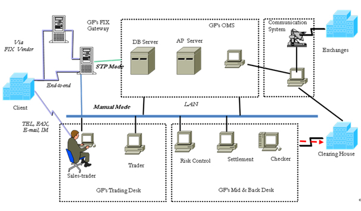

QFII Business
I. GF Qualified Foreign Institutional Investor (QFII) Services
Built on consolidated technological platform, GF well-experienced trading team commits to providing international institu
tional investors access to China capital market. GF serves clients with responsive order handling, regular research report
ing and rigorous risk management.
In addition to execution of orders, GF delivers up-to-date reports on macro economy, 30 industries and over 800 listed
companies to help investors get a better understanding about the local market.
Collaborating with other divisions and subsidiaries, GF QFII offers full-ranged institutional services in H-share, cross-
border ETF arbitrage trading, Qualified Domestic Institutional Investor (QDII) businesses, offshore RMB bonds, and etc.
II. Trading Services: Manual & Direct Market Access (DMA)

Execution:
■ Experienced in major order types: limit, limit or better, market, MOC, MOO, VWAP, CD
■ The first and most experienced in FIX since 2007
■ The first and largest broker providing B-share DMA solution
■ Various means of Connection via
■ End-to-end leased lines;
■ VPN and via vendors: Reuters, Sungard, Bloomberg, Fidessa, NYSE Tech and VPN connection
■ FIX gateway: v4.2 or above
■ OMS: special edition for foreign investors provided by the largest local vendor
■ Separated market access for foreign clients from domestic clients
Order types:
■ Non-touch: from client to the exchanges directly
■ One-touch: final confirmation of order placing by GF’s trader, seldom used
■ High-touch: on-demand order type
Algo trading:
■ Basket order supported
■ Strategy at broker side: TWAP, volume in line, switch order and etc.
■ DSA-customized strategy at client side, auto mapping at GF(non-touch)
III. Prompt reporting
■ Execution report before 3:15pm every trading day with data from exchange house
■ Trading confirmation report to be provided after receiving clearing data from CSDCC around 16:30 pm
■ Real-time execution data available via FIX connectivity
■ Customized format of reports
IV. Contingency arrangement
■ Hot standby for power, hardware and communication
■ On-site service within 2 hours by IT venders during trading days
■ Failover test on demand of clients before live trading
■ Full-function trading desk as manual execution backup for breakdown of electronic trading